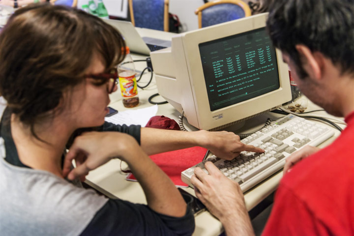
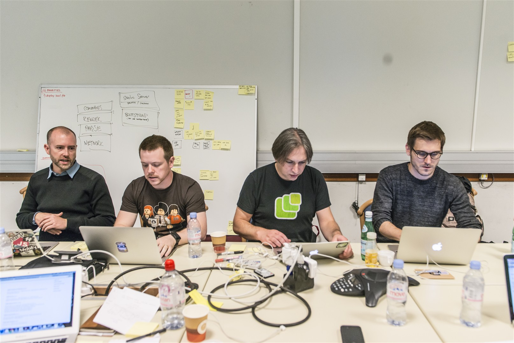

In late September, 2013, twelve web developers, designers, writers, standardistas, and technologists descended upon CERN — the birthplace of WWW and HTTP and the web browser — to spend two days rebuilding the line-mode browser. This is our story.
Making of LMB 2013
Rebuilding 20 year old software in a modern day browser
Preservationistas
We hear you ask: This is silly; why take on such a challenge?
Computers are simultaneously boosted and hindered by their rapid obsolescence. So while the line-mode browser is a mere 20 years old (as of the writing of this), it's only viewable (and barely usable) on the odd terminal here in the closet of CERN. We've come so far in so few years that we're on the cusp of not being able to interact with the very software that got us here. As folks who believe deeply in — and owe much to — the web, this pains us. In rebuilding / simulating this origin browser, we hope to achieve a few goals.
First, we want to provide context for the web of today. From where did it come? Out of what did it grow? Despite being only 20 years old, the qualatative differences between then and now are shocking. It's nice to be able to time-travel back, at will, and remember our roots.
Which brings us to the second reason: we want a version of the line-mode browser that anyone can run and, furthermore, point at contemporary websites. Our line-mode browser simulator not only allows you to view the first web pages ever placed online (on these very servers!), but will also render — as accurately as possible — any other website to which it's pointed. It may not always be pretty, but it's usually entertaining. (And heck, the web was never really meant to be that pretty, right?1)

Our Rules
In simulating the line-mode browser, we had a couple of rules.
We wanted to be as true to the original rendering engine as possible. That meant not adding features or improving the display of elements in any way different than the original.
[[other rules]]

What tech did we use?
Basically: We wrote an old browser in a new browser. Here's the details.
The approach we centered on was to use a proxy Node server. This allowed us to request arbitrary web resources (we’d run into CORS problems with many sites).
In the node app, we manipulate the DOM, disabling scripts and style (linked, embedded and inline). But, importantly, we leave the script, link and style elements in place. Why? we hear you ask. Because, dear reader, the original line mode browser would display contents of those tags. Its parsing rule was to strip the start and end tags off unknown elements, but display their content inline. So it would display the content of style, link and script elements, but would not be affected by them, which is why we disabled them. It may look messy but we're being as true as possible to the way the line-mode browser worked.
After the DOM was changed like this, we add the CSS and JavaScript for the emulation, then serialise the document back into a string, and then send this to the browser.
The browser then parses the document, applies the CSS and runs the JavaScript, so you the user can experience the awesomeness that was the line mode browser.
The CSS was used for 99% of the appearance of the document, with JavaScript used for some positional aspects. For example, JS runs the command line fixed to the bottom of the content. Techincally, this would be possible with CSS, but the required features, including viewport units aren’t supported across all widely used browsers.

What hacks did we use?
Hacks! We do not hack. OK, maybe we did some hacky things, but thankfully nothing particularly grubby.
As mentioned, we used some JavaScript for calculating certain aspects of the page layout. We'd have preferred to have done this in pure CSS.
Will what we built today be usable in 10 years?
We hope so! One of the things we wanted to do is emulate how the line-mode browser would handle today’s web content. Even though, technically, the original line-mode terminals would choke on today's heavy pages — we're averaging about 1.2MB of content per page.
But we think — are pretty certain — that this bundle of HTML, CSS and JavaScript will be usable for more than 10 years. At least we hope so!
Footnotes
- OK — that not entirreeeeely true. Remember how we said this wasn't the first browser? Well, the first browser was very pretty, and very graphical. It ran on the NeXT desktop and not only had style sheet support (!!) but also handled vector graphics.